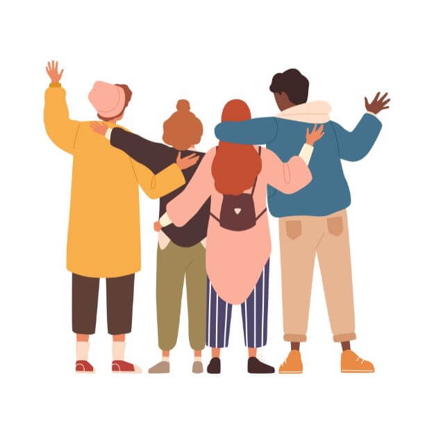

「あの時、一歩踏み出してよかった。」
誰もが抱えるスクール選びの不安や迷い。
プロナビを選んだ理由から受講中の変化、そして卒業後の具体的なキャリアまでをインタビューしました。
迷っているあなたへ、先輩たちからの心強いメッセージをお届けします。
Taro M.さん
受講6ヶ月で初案獲得
- 年齢
- 30代
- 受講前の職業
- 事務職
- 現在の働き方
- フリーランスWebデザイナー、週4リモート勤務
プログラミングを始める前（Before）
Q. ProNaviに出会う前、どんな課題や悩みを抱えていましたか？
残業が多く、家族との時間が少なかったり、給料がなかなか上がらなく将来への漠然とした不安がありました。
Q. なぜ、数あるスクールの中でProNaviを選んだのですか？
営業経験がなかったので、案件がとれるようになるのかがともて不安でした。ここでは プログラミングスキルだけではなく、営業スキルや自己成長ができる仕組みが用意されていることが決め手でした。
卒業後の変化と未来（After）
Q. 卒業後、あなたの働き方やライフスタイルはどのように変わりましたか？
念願の在宅ワークを実現しました。通勤時間がゼロになり、 残業もなくなり子どもとの時間が増えたこと、 自分が思い描いた未来を手に入れることがでが一番うれしいです。
学習中のリアルな声
Q. 6ヶ月間の学習で、最も大変だったこと、挫折しそうになった瞬間は？
模写の上級に進むと難しいことを理解する必要が増え、それが大変でした。 また、プログラミングのエラーが解決できず、夜遅くまで悩むこともありました。
Q. その困難を、どのように乗り越えることができましたか？
メタライフでつながる仲間や講師の方がいて、なんでも相談できる環境だったので乗り越えられました。 24時間LINEサポートで夜中に質問できたこと、コーチが技術だけでなく精神的なサポートをしてくれたことも大きかったです。 もし一人であれば、乗り越えることは難しかったと思います。
他のインタビュー記事を見る
先に夢を叶えた先輩たち。
次はあなたの番！まずは無料カウンセリングで、
気軽に話をきいてみよう！
先に夢を叶えた先輩たち。
次はあなたの番！まずは無料カウンセリングで、
気軽に話をきいてみよう！